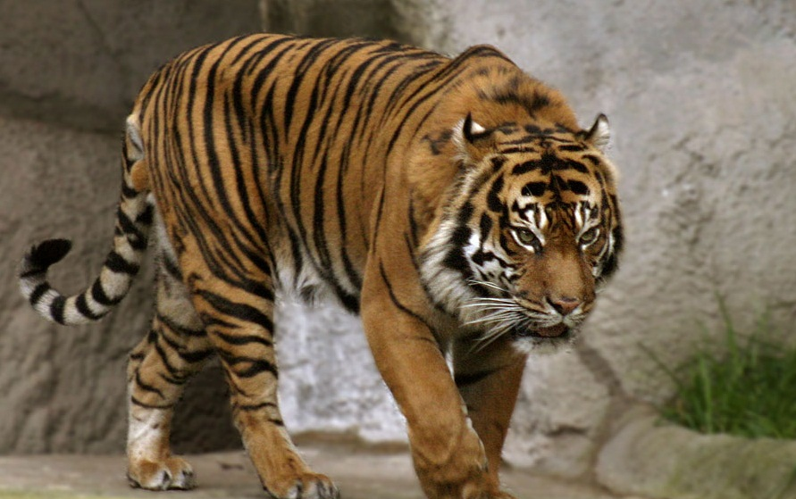
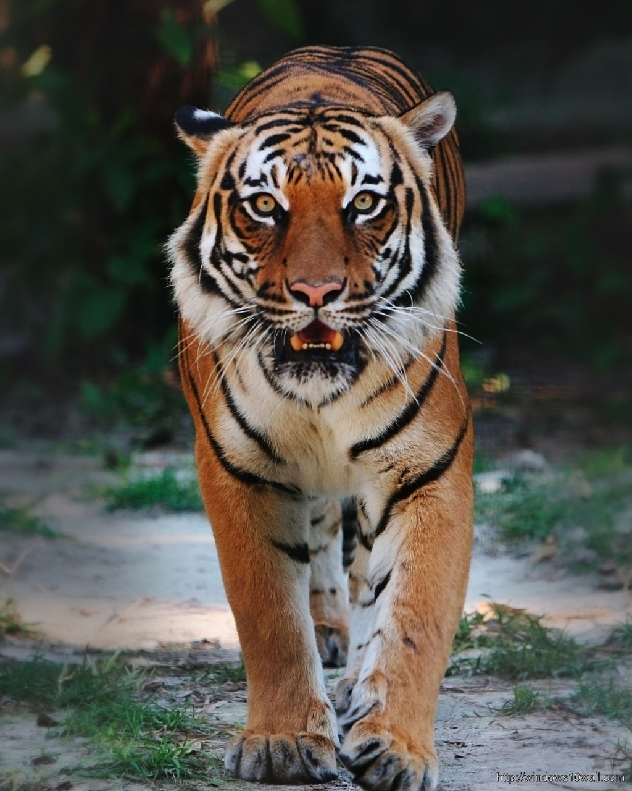
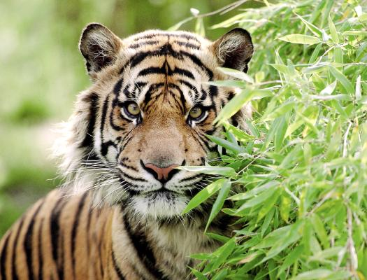
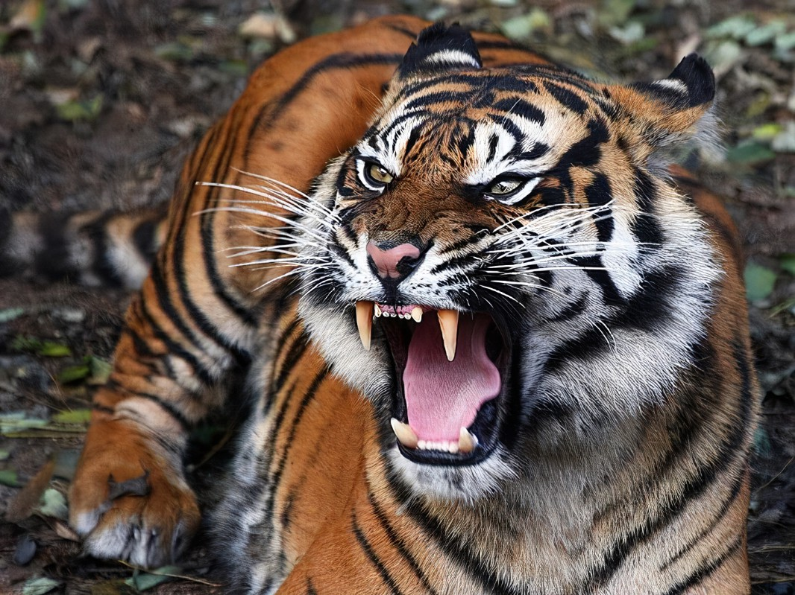
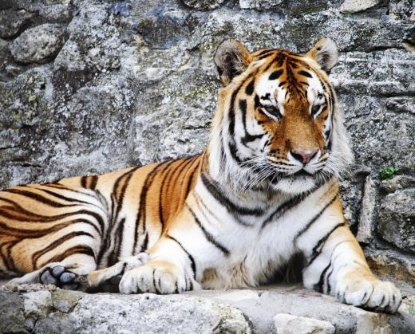
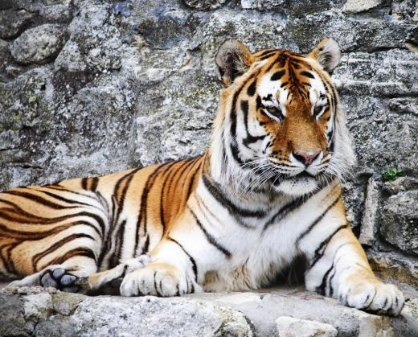
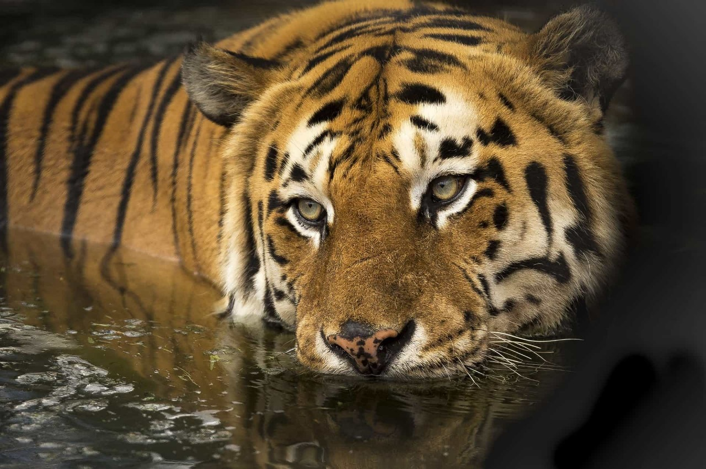
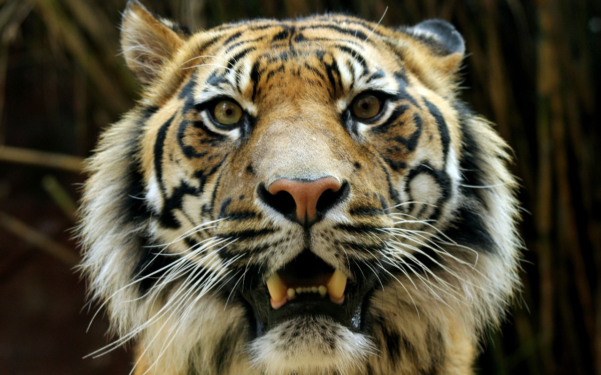
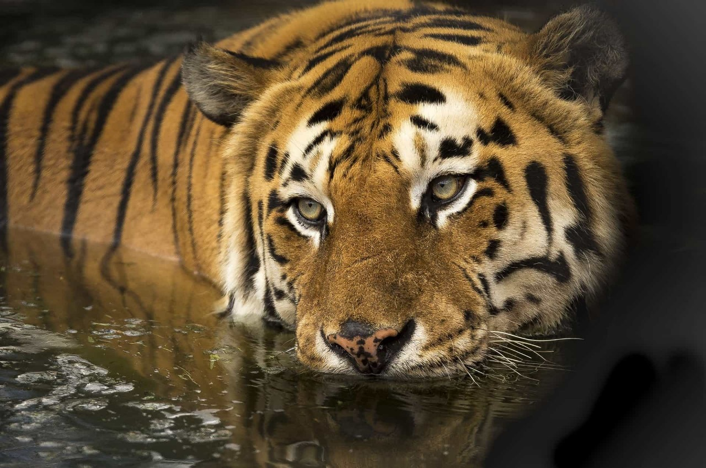
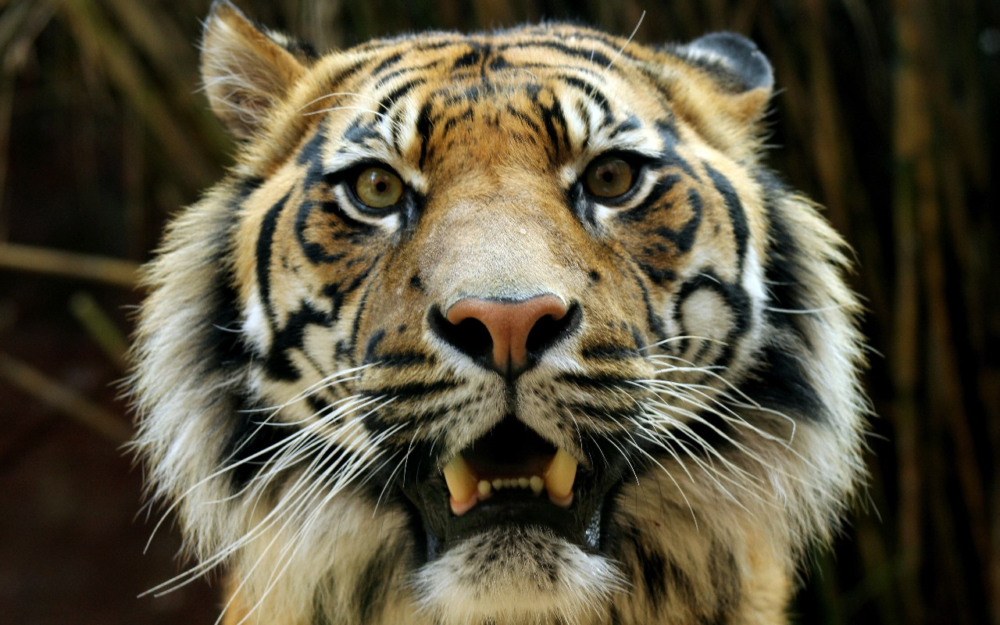

HISTORY
The tiger (Panthera tigris) is the largest living cat species and a member of the genus Panthera. It is most recognisable for its dark vertical stripes on orange fur with a white underside. An apex predator, it primarily preys on ungulates, such as deer and wild boar. It is territorial and generally a solitary but social predator, requiring large contiguous areas of habitat to support its requirements for prey and rearing of its offspring. Tiger cubs stay with their mother for about two years and then become independent, leaving their mother's home range to establish their own. The tiger was first scientifically described in 1758. It once ranged widely from the Eastern Anatolia Region in the west to the Amur River basin in the east, and in the south from the foothills of the Himalayas to Bali in the Sunda Islands. Since the early 20th century, tiger populations have lost at least 93% of their historic range and have been extirpated from Western and Central Asia, the islands of Java and Bali, and in large areas of Southeast and South Asia and China. What remains of the range where tigers still roam free is fragmented, stretching in spots from Siberian temperate forests to subtropical and tropical forests on the Indian subcontinent, Indochina and a single Indonesian island, Sumatra.
All big and small cats come under the carnivore family called Felidae. Scientifically tiger is known as “Panthera tigris”. Panthera is a genus given to animals that possess the ability to roar For example, Tiger, Lion, Jaguar, and Leopard. These animals have a free-floating hyoid bone in their throat which helps them to generate a roaring sound. However, as per new studies; the ability to roar is generated by the larynx commonly called the voice box. Recent genetic studies have included a Snow leopard in the genus Panthera though it doesn’t have the ability to roar. In Greek language Tigris means “swift river” which originated from Turkey and ends in Iraq’s Persian Gulf. And as per Kurdish meaning, Tir means arrow and Jir or Jehar means poison so the word combines to Tirjir, whose pronunciation and spelling later became Tigris. Both swift flowing river and fast and poisonous arrow were associated to the word Tiger. Miacid was the oldest ancestor of all the modern carnivores found on the Earth today. They are the extinct group of carnivores, which gave rise to dogs, bears, skunks, mongooses, cats, and hyenas. Miacids dated back to 50 million years ago. They were known to climb trees; had short legs, and long claws, and could ambush their prey. They use to look similar to pine martens.
Pseudaelurus, that was found on the earth about 20 million years ago is said to be the direct ancestor of 40 cat species living on earth today.
Tigers might have walked the earth million years ago, and the earliest of tiger fossils which was found in South Asia, dates backs to 2 million years old. Early tiger fossil have been found in China, Java and Sumatra. In Russia the fossil found was seven hundred thousand year old and in India it was Ten thousand years old. The early evidence comes from sculpted tiger on seals of Indus Valley civilization of Harappa and Mohenjodara, placed at 2500 to 1700 BC.
EXTINCT SUBSPECIES
CASPIAN TIGER :
The Caspian tiger, Panthera tigris virgata, was a subspecies of tiger native to the Caspian Sea region. Recognized for its large size and distinctive coat, it went extinct in the mid-20th century due to hunting and habitat loss. Efforts to conserve and protect remaining tiger species focus on addressing threats like poaching and promoting habitat preservation. Conservation initiatives strive to ensure the survival of these majestic creatures in the wild.


BALI TIGER :
The Bali tiger, once native to Bali, Indonesia, became extinct in the 1930s due to habitat loss and human activities, highlighting the vulnerability of species to environmental changes. Conservation efforts were insufficient, emphasizing the pressing need for global awareness and proactive measures to protect endangered species.
  JAVAN TIGER :
The Javan tiger, native to Java, Indonesia, became extinct in the 1970s due to habitat loss and hunting, highlighting the vulnerability of species to human activities. Conservation lessons from its demise are crucial for preserving biodiversity.
 

EXTANT SUBSPECIES
BENGAL TIGER :
Bengal Tiger (Panthera tigris tigris), the most numerous tiger subspecies, found in India, Bangladesh, Nepal, and Bhutan. It's also the national animal of India.
 


